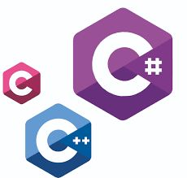
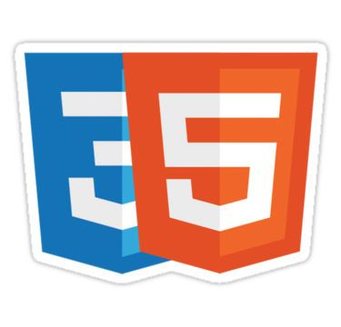

Hi, I am Dennis!
Future Web Developer

Welcome to my resume page!
I am at the beggining of my Web Development journey, with this being my second capstone project.
This web page aims to let you know more about me while I am putting in practice all the things
I've learned about HTML and CSS so far!
Enjoy!

I have zero experience in any IT related field since I've just got in University. My only experience comes from a marketing job where I had to sell a course of Romanian Language to 12th grade pupils.Below you can observe a picture of me and my team:)
My IT related skills are:
Being able to write code in C/C++. These were the first programming languages I learned. Because of them, I am know able to perform procedural and object oriented programming and I was able to build a solid base regarding Data Structures and Algorithms. Also, I have a little bit of C# knowledge since, I have studied some in my last highschool semester.

I am also able to do procedural and object oriented using Python since it is way easier due to its automatic memory handling, syntax and multitude of external libraries. Currently, I am learning to use Python more in web and game development.
Obviously, since you are reading this information on a website, it is crystal clear that I own some HTML/CSS skills. Right now, I have all the basics I need but I am looking forward to expand my knowledge by learning more about the backend part, namely to learn Javascript (and Java as well).
And, beside these technical skills, I also rely on analytical thinking and usually come with ingenious ideas in order to solve different real world problems.

If you are also looking for new people to share your ideas with, contact me! Maybe we will be able to develop better projects if we put our ideas together!
Personal Email:
dennis.manoila@gmail.com
Work Email:
dennis.manoila05@e-uvt.ro